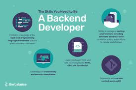

Como o nome sugere, o desenvolvedor back-end trabalha na parte de “trás” da aplicação. Ele é o responsável, em termos gerais, pela implementação da regra de negócio. Em uma aplicação web, este desenvolvedor, quando focado, não toca na parte visual da aplicação. Por lidar com a regra de negócio, as vezes um programador de sistemas, como de aplicações comerciais e até científicas, pode ser chamado de desenvolvedor back-end. E geralmente, nessas aplicações, este desenvolvedor trabalha um pouco com a parte visual. Por isso, para este artigo, o desenvolvedor back-end levado em conta, é o desenvolvedor de aplicações web. Quando falamos de back-end em desenvolvimento web, nos deparamos com várias linguagens, como Go, Clojure, C#, PHP, Java, Python, Ruby, entre outras. Cada uma possui vantagens e desvantagens em relação ao uso no desenvolvimento web, bem como no mercado de trabalho.
